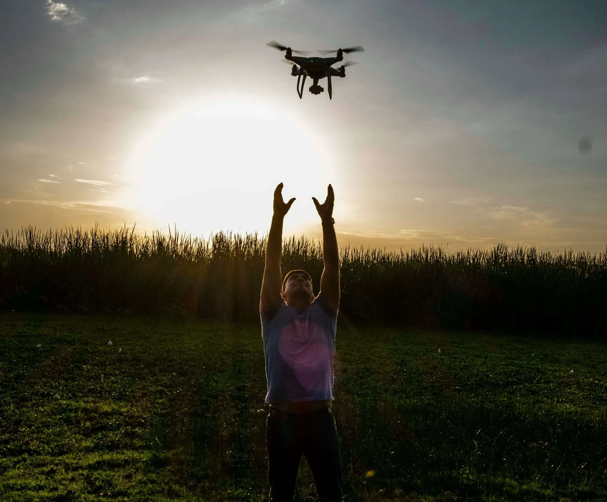

Sobre Nosotros
Nuestros orígenes
JF TerraDron nace del trabajo, la experiencia y la visión de dos socios que han sido productores agrícolas toda su vida. Ambos crecieron y trabajaron en el campo, en la ciudad de Lincoln, Provincia de Buenos Aires.
Compromiso con la innovación
Frente al avance de la tecnología en el agro, decidieron incorporar drones para mejorar la eficiencia y precisión en las tareas del campo, sin perder el enfoque humano que siempre los caracterizó.
Misión
JF TerraDron ofrece servicios de fumigación, siembra y monitoreo aéreo. Nuestro objetivo es brindar soluciones accesibles, seguras y sustentables para cada productor.